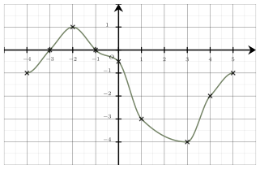
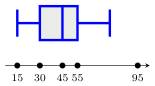
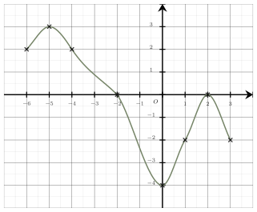
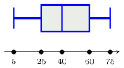

Fonctions, évolutions et statistiques
QCM à réponse unique — choisis une proposition pour révéler la correction immédiatement.
Même QCM, sans correction — ton score apparaît une fois toutes les questions complétées.
L’équation $-4x+24=0$ a pour solution $x=6$.
L’équation $8x+56=0$ a pour solution $x=-7$.
Le tableau de signe du produit $(-4x+24)(8x+56)$ est :
La bonne réponse est la réponse A.

Une seule affirmation est correcte :Les images se lisent sur l’axe des ordonnées et les antécédents sur l’axe des abscisses.
Ainsi, on peut dire que :
$\bullet$ $0$ est l’image de $-3$,
$\bullet$ un antécédent de $0$ est $-3$,
$\bullet$ $-3$ est un antécédent de $0$,
$\bullet$ l’image de $-3$ est $0$,
$\bullet$ $-3$ a pour image $0$,
$\bullet$ $0$ a pour antécédent $-3$.
La bonne réponse est la réponse D.
Le taux d’évolution $t$ est donné par la formule :
$t = \dfrac{\text{valeur finale} - \text{valeur initiale}}{\text{valeur initiale}}$
Ici : $t=\dfrac{900 - 600}{600} = 0{,}5$
Le taux d’évolution est donc de $50 \ $%.
La bonne réponse est la réponse C.

L’écart interquartile est la différence entre le troisième quartile et le premier quartile.
D’après le diagramme en boite, on a $Q_3 = 55$ et $Q_1 = 30$.
Donc l’écart interquartile est $Q_3 - Q_1 = 55 - 30 = 25$.
La bonne réponse est la réponse B.
La proportion des filles internes par rapport à l’ensemble des élèves du lycée est donnée par :
$\dfrac{1}{2}\times \dfrac{3}{5}=\dfrac{3}{10}$.
La bonne réponse est la réponse C.
On applique la propriété des puissances de puissances d’un réel :
Soit $n\in \mathbb{N}$, et $p \in \mathbb{N}$, on a : $\left(a^{n}\right)^{p}=a^{np}$
$\begin{aligned}\left(4^{n}\right)^{2}&=4^{2n}\\\\ &=\left(4^{2}\right)^{n}\\\\ &=16^{n} \end{aligned}$
La bonne réponse est la réponse D.

Une seule affirmation est correcte :